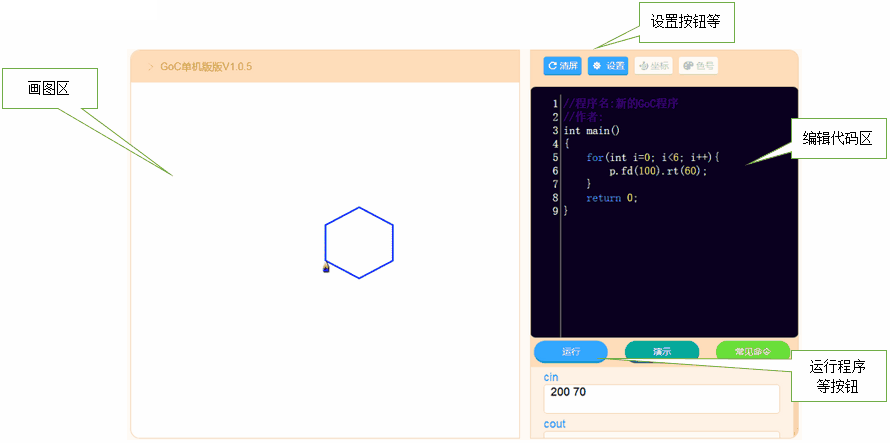
初始程序：如果是第一次使用时，代码编辑区会自动有一个空框架的GoC程序，如下：
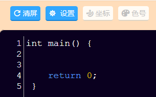
改变字体大小：当光标出现编辑代码区域内时，使用”ctr +上 / 下”组合键，调整字体的大小，例如：
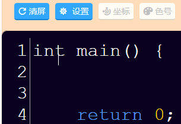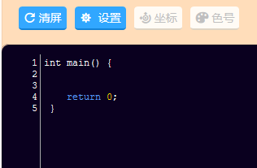
改变样式（主题）：当光标出现编辑代码区域内时，使用”ctr +左 / 右”组合键，可以选择不同的字体样式，例如：
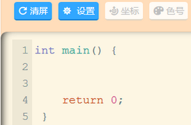 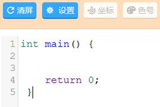 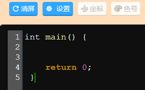
solarized light主题 defalut主题 abcdef主题
运行程序：输入GoC程序后，鼠标点击，程序将运行并在右边绘图区域画出程序相应的图。
终止程序：有些程序可以运行时间超出预想或进入“死循环”等情况，可以鼠标点击，程序将终止运行，已经画出的图形部分将停留在绘图区域。
清理屏幕：如果要清理绘图区域的图形，可以鼠标点击。
四、输入、输出窗口
cin、cout：输入、输出窗口是对cin、cout的语句改造模拟成“文件输入输出”功能。当用命令cinWin()设置为伪“文件输入时”，cin读入不是从键盘，而是从下面所示的cin窗口读入。cout也不是输出到一个dos窗口，而是输出到下面所示的cout窗口里面。下面样例是读入2个数，输出他们的和。
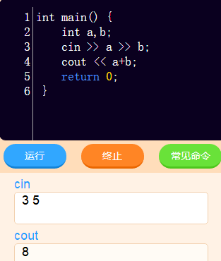
常见命令：鼠标点击，弹出一些常见goc命令列表，点击其中的命令，这个命令代码会立即自动插入到编辑代码区的光标位置。
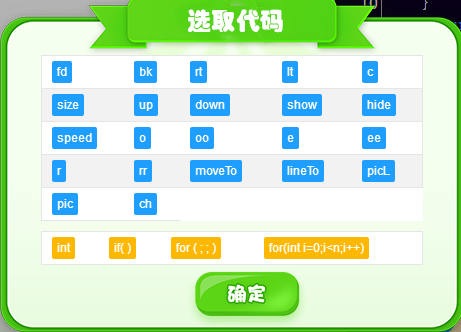
显示坐标：鼠标点击，绘图区域的背景上显示出网格坐标。坐标的颜色、网格大小可以在设置菜单中修改。
显示颜色编号：鼠标点击，在绘图区域背景的右边显示出16种颜色的对应颜色编号。
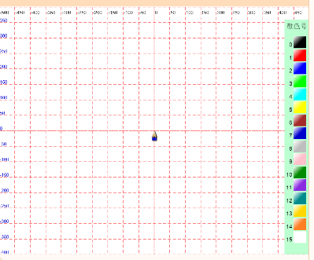
显示网格坐标、颜色编号的效果图
设置窗口：点击，会弹出一块菜单选择窗口，可以设置笔的默认速度、默认颜色、默认大小、坐标网格的大小、坐标颜色和编辑代码窗口的字体大小、风格等。
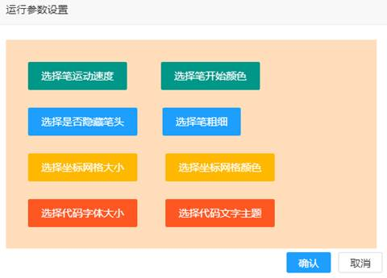
设置菜单窗口
打开菜单：点击右上角的，会弹出一块菜单窗口，可以出现帮助等选项。
对于单机版还有保存、调入程序等。
帮助：鼠标点击，会弹出帮助窗口。可以得到GoC界面说明文档、GoC绘图命令列表、GoC单机版下载等链接。
调入、保存程序：单机版这个功能的界面在不同的浏览器里表现不一样。